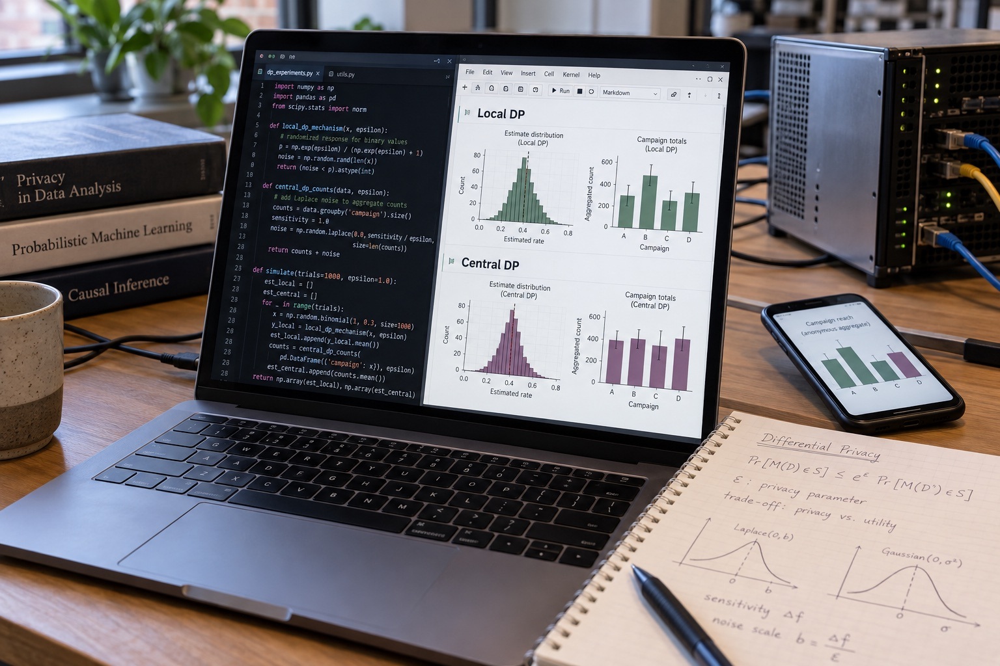

FEATURED RESEARCH · PUBLISHED IN NHSJS
When should privacy start on the user's device?
I compared local and central differential privacy in a synthetic online advertising setting, implementing three mechanisms in Python and studying their privacy–utility trade-offs.
10,000 simulated users · 88,000+ impressions · 8 campaigns